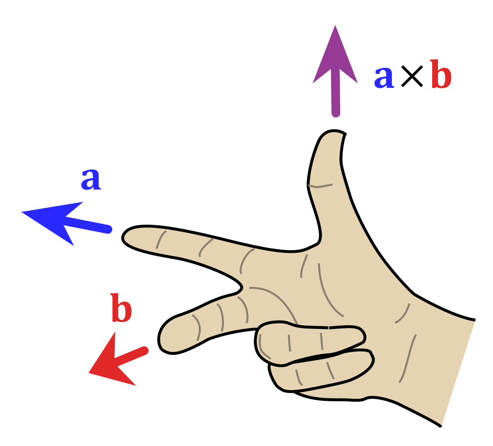
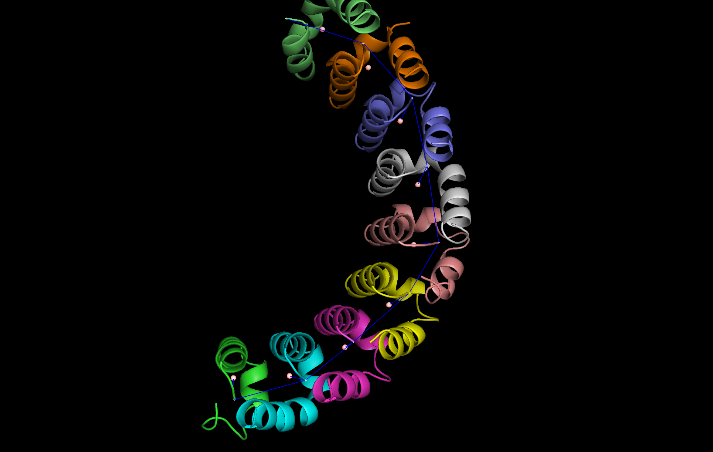
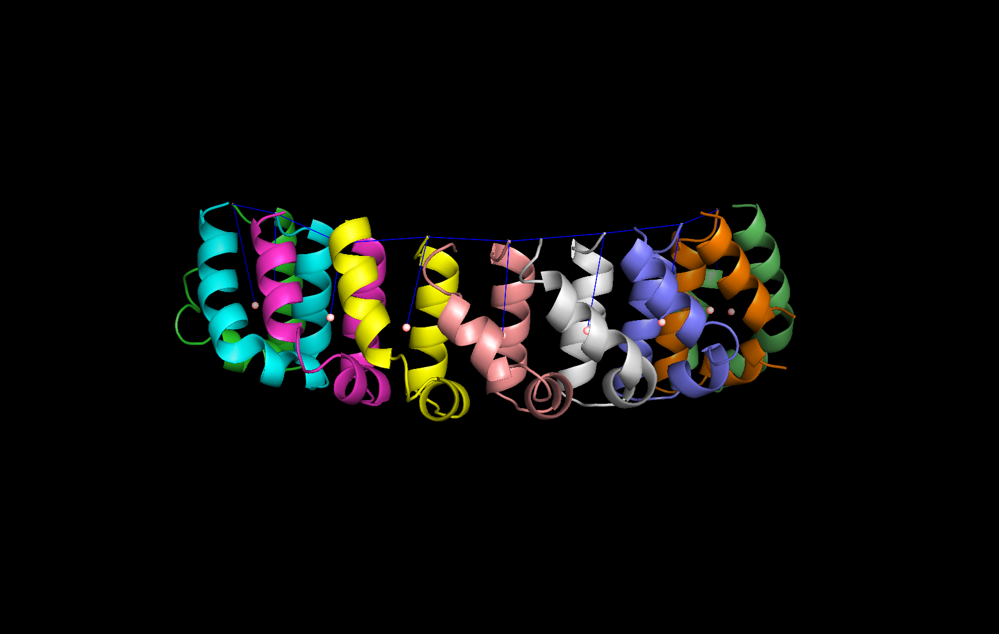

Welcome to Tandem Repeat Solenoids Geometry’s documentation!¶
Solenoids and the project aim:
Solenoids are a set of proteins structures that contain a superhelical arrangement of repeating structural units. The project aim is to analize those structures by calculating some geometrical parameters common to each solenoid. In particular the project provides codes to calculate: the handedness of each unit, the twist angle between a unit and the next one, the curvature and pitch angle between vector connecting consecutive units. The following paragraphs describe the algorithm approach used to calculate each one of the parameters.Handedness
In order to understand the handedness of a unit the algorithm uses the cross product, which can be understood with the right-hand rule. Given two vectors, a and b, the cross product gives a third vector axb whose orientation is related to the orientation of the first two: if b is on the left of a then axb points upward, if b is on the right of a then axb points downward.
In an ideal situation a and b lie on the xy plane and axb lies on the z axis. In this framework the handedness can be defined by the sign of the z component of axb: if it’s positive (i.e. axb pointing upward) then the unit is right-handed, if it’s negative (i.e. axb pointing downward) then it’s left-handed. In our situation the vectors are given in an arbitrary coordinate system and the z component of axb should not be trusted as a discriminant for handedness. Therefore we need to choose properly a coordinate system which is suitable for our purpose and, by a transformation matrix, to express all the vectors with the new basis.
The algorithm follows the following steps for each unit:
- We calculate two vectors: one from the center of mass to the first alpha carbon; the second from the center of mass to the second alpha carbon.
- We define a new 3D coordinate system. The x-axis is the vector from the center of mass to the first alpha carbon. The z-axis is the vector from the center of mass of the unit to the center of mass of the next unit (for the last unit we take the vector from the center of mass to the previous one and calculate the inverse). Finally the y-axis is the cross product of z-axis and x-axis.
- We calculate the transformation matrix in order to get the two vectors in the new coordinate system.
- We calculate the cross product of the vectors in the new coordinate system.
- Finally if the third component of the cross product is positive the unit will be right-handed otherwise it will be left-handed.
Twist
In order to calculate the twist angle between consecutive units we define two planes using three points for each one. We then calculate the dihedral angle between those two planes.The algorithm follows the following steps:
- We identify four points in the space: the first alpha carbon of the previuos unit; the center of mass of the previous unit; the center of mass of the unit; and the first alpha carbon of the unit.
- We use a function from the Biopython library that calculates the angle between two planes, called dihedral angle. The first plane is identified by: the previous unit first alpha carbon, the previous unit center of mass, the unit center of mass. The second plane is identified by: the previous unit center of mass, the unit center of mass, the unit first alpha carbon.
Curvature and Pitch
We choose to calculate the curvature and pitch angle in the same function becouse the first steps of the algorithm are identical.The algorithm steps are:
- In order to have a space where we can compare the vectors of interest we define a coordinate system. The axis x is from the unit center of mass to the last alpha carbon of that unit. The axis z is from the next unit last alpha carbon and the last alpha carbon of current unit. The axis y is the cross product between the two axis defined as described above.
- We define a transformation matrix in order to translate the two vectors in the new coordinate system.
- We then calculate the vector that compared with different axis of the coordinate system described above, gives us the curvature and the pitch angles. The vector is from the next unit last alpha carbon to the following unit last alpha carbon.
- We translate the vector defined above and the two axis (x and z) in the new coordinate system.
- We calculate the angles. The curvature is the angle between the vector defined at step 3 and the axis z. The pitch is the angle between the vector of step 3 and the axis x minus the angle between the axis x and axis z.
We can observe an example of curvature and pitch in the following images:


How to install and usage example
In order to install the project, open a terminal and do the following:# cd /path/to/setup.py
# pip install . OR # python setup.py install
Then by typing the command trsolenoidsgeo we get the list of commands. A possible usage is:
# centerofmass /path/to/pdb/file /path/to/db/file /path/to/the/output/folder
IMPORTANT: When you change the pdb and db files, be sure that the output folder is empty
Contents:
-
class
DrawOnPymol.DrawOnPymol¶ Class used to interact with the pymol software
-
draw_center_of_mass(centers)¶ Draw the center of mass of each unit :param centers: a dictionary containing the coordinates for each center of mass :return:
-
draw_distances_com(centers)¶ Draw the distances vectors between centers of mass :param centers: a dictionary containing the coordinates for each center of mass :return:
-
draw_units()¶ Draw each unit in the pymol software :return:
-
draw_vector(x, y, axis=False)¶ Draw a vector between the two points x and y represented by two numpy arrays :param x: the first point :param y: the second point :param axis: indicate if the vector is a plane axis or not :return:
-
start_pymol()¶ Start a session in pymol :return:
-
-
class
ProteinGeometry.ProteinGeometry¶ Class used to calculate all the geometric parameters on the units
-
calculate_angle(vector0, vector1)¶ Calculate the angle between two vectors :param vector0: the first vector :param vector1: the second vector :return: the angle in degree
-
calculate_center_of_mass()¶ Calculate the center of mass for each unit :return: a dictionary containing the centers of mass
-
calculate_curvature_and_pitch(centers)¶ Calculate the curvature and the pitch of a unit compared with the previous one :param centers: the dictionary containing the centers of mass :return: two dictionaries containing one the curvature and the other the pitch angles in degrees
-
calculate_distance(first_point, second_point)¶ Calculate the distance between two point :param first_point: the first point :param second_point: the second point :return: an integer which is the distance calculated between the two points
-
calculate_distances(centers)¶ Calculate the distances between each alfa carbon and the center of mass :param centers: the dictionary of the centers of mass :return: a dictionary containg lists, each list contains the distances calculated
-
calculate_handedness(centers)¶ Calculate the handedness (L or R) for each unit :param centers: the dictionary containing the centers of mass :return: return a dictionary. dict[unit] = handedness
-
calculate_twist(centers)¶ Calculate the rotation between units :param centers: the dictionary containing the center of mass :return: a dictionary. dict[unit] = (angle, unit from)
-
center_of_mass_distances(centers)¶ Calculate all the distances between the centers of mass :param centers: a dictionary containing the centers of mass :return: a dictionary containing tuples that represents the distances between centers of mass
-
init_pymol(canvas)¶ Generic method used to initialize a pymol istance in order to draw the results :param canvas: the istance of object DrawOnPymol :return:
-
normalize_vector(vector)¶ Normalize a vector :param vector: the vector to be normalized :return: the normalized vector
-
open_directory()¶ Generic method used to retrieve a sorted list of the files in output directory :return:
-
select_atom(id, structure)¶ Isolate the atoms equal to the atom passed as argument :param id: the atom to be isolated :param structure: the structure to be changed :return: a list of the atom equal to the amot passed as argument
-